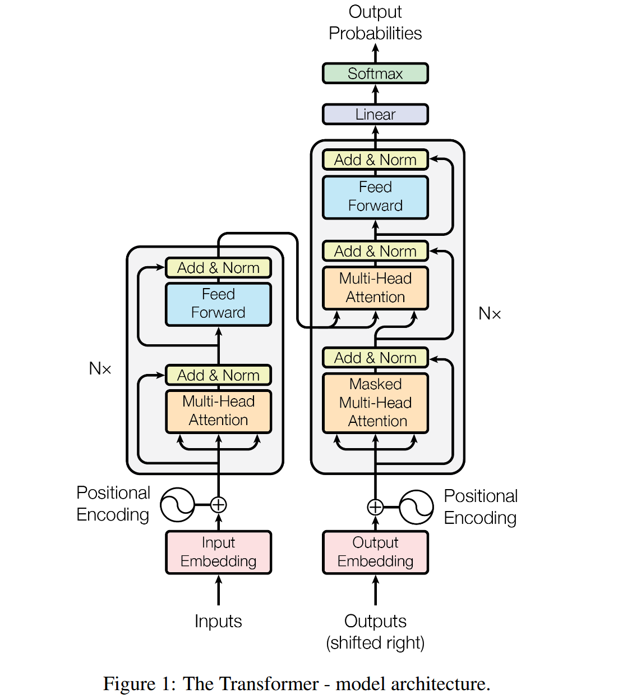
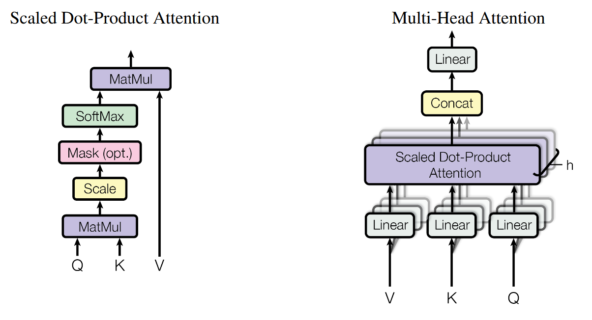

# Attention is all you need
- 【Original Link】 Attention Is All You Need
- Updated on Aug 2023
- Authors
- Ashish Vaswani Google Brain avaswani@google.com
- Noam Shazeer Google Brain noam@google.com
- Niki Parmar Google Research nikip@google.com
- Jakob Uszkoreit Google Research usz@google.com
- Llion Jones Google Research llion@google.com
- Aidan N. Gomez † University of Toronto aidan@cs.toronto.edu
- Łukasz Kaiser Google Brain lukaszkaiser@google.com
- Illia Polosukhin ‡ illia.polosukhin@gmail.com
# Abstract
The dominant sequence transduction models are based on complex recurrent or convolutional neural networks that include an encoder and a decoder.
显性序列转导模型基于复杂的循环或卷积神经网络，其中包括编码器和解码器。
The best performing models also connect the encoder and decoder through an attention mechanism.
性能最佳的模型还通过注意力机制连接编码器和解码器。
We propose a new simple network architecture, the Transformer, based solely on attention mechanisms, dispensing with recurrence and convolutions entirely.
我们提出了一种新的简单网络架构，即 Transformer，它仅基于注意力机制，完全省去了重复和卷积。
Experiments on two machine translation tasks show these models to be superior in quality while being more parallelizable and requiring significantly less time to train.
对两项机器翻译任务的实验表明，这些模型在质量上表现出色，同时更具可并行化性，并且需要更少的训练时间。
Our model achieves 28.4 BLEU on the WMT 2014 Englishto-German translation task, improving over the existing best results, including ensembles, by over 2 BLEU.
我们的模型在 WMT 2014 英德翻译任务中达到了 28.4 BLEU，比现有的最佳结果（包括合奏）提高了 2 BLEU 以上。
On the WMT 2014 English-to-French translation task, our model establishes a new single-model state-of-the-art BLEU score of 41.8 after training for 3.5 days on eight GPUs, a small fraction of the training costs of the best models from the literature.
在 WMT 2014 英法翻译任务中，我们的模型在 8 个 GPU 上训练 3.5 天后，建立了新的单模型最先进的 BLEU 分数 41.8，这只是文献中最佳模型训练成本的一小部分。
We show that the Transformer generalizes well to other tasks by applying it successfully to English constituency parsing both with large and limited training data.
我们证明了 Transformer 模型能够很好地推广到其他任务，通过将其成功应用于英语成分句法分析，无论是在大量训练数据还是有限训练数据的情况下。
# Introduction
Recurrent neural networks, long short-term memory and gated recurrent neural networks in particular, have been firmly established as state of the art approaches in sequence modeling and transduction problems such as language modeling and machine translation.
循环神经网络，尤其是长短期记忆网络（LSTM）和门控循环单元（GRU），已经在序列建模和转导问题（如语言建模和机器翻译）中被牢固地确立为最先进的方法。
Numerous efforts have since continued to push the boundaries of recurrent language models and encoder-decoder architectures.
自那以后，人们不断努力突破循环语言模型和编码器 - 解码器架构的极限。
Recurrent models typically factor computation along the symbol positions of the input and output sequences.
循环模型通常沿着输入和输出序列的符号位置进行计算分解。
Aligning the positions to steps in computation time, they generate a sequence of hidden states , as a function of the previous hidden state and the input for position .
将位置与计算时间的步骤对齐，它们生成一系列隐藏状态，这些隐藏状态是前一个隐藏状态 和位置 的输入的函数。
This inherently sequential nature precludes parallelization within training examples, which becomes critical at longer sequence lengths, as memory constraints limit batching across examples.
这种固有的顺序性使得在训练样本内部无法进行并行化处理，这在序列长度较长时变得尤为关键，因为内存限制会限制跨样本的批处理。
Recent work has achieved significant improvements in computational efficiency through factorization tricks and conditional computation, while also improving model performance in case of the latter. The fundamental constraint of sequential computation, however, remains.
最近的研究通过分解技巧和条件计算在计算效率方面取得了显著的改进，同时也提高了后者的模型性能。然而，顺序计算的基本限制仍然存在。
分解技巧可以用于优化矩阵乘法、卷积操作等。例如，通过将一个大的矩阵乘法分解为多个小的矩阵乘法，可以利用现代硬件的并行计算能力，从而提高计算效率。
条件计算可以用于动态调整模型的计算量，例如在某些情况下跳过某些层的计算，或者根据输入数据的特征选择性地激活某些神经元。
Attention mechanisms have become an integral part of compelling sequence modeling and transduction models in various tasks, allowing modeling of dependencies without regard to their distance in the input or output sequences
注意力机制已经成为各种任务中令人信服的序列建模和转导模型的一个重要组成部分，它允许在不考虑输入或输出序列中依赖项距离的情况下对依赖关系进行建模。
In all but a few cases, however, such attention mechanisms are used in conjunction with a recurrent network.
然而，在几乎所有情况下，这些注意力机制都是与循环网络结合使用的。
In this work we propose the Transformer, a model architecture eschewing recurrence and instead relying entirely on an attention mechanism to draw global dependencies between input and output. The Transformer allows for significantly more parallelization and can reach a new state of the art in translation quality after being trained for as little as twelve hours on eight P100 GPUs.
在这项工作中，我们提出了 Transformer 模型，这是一种摒弃了循环结构，完全依赖于注意力机制来捕捉输入和输出之间全局依赖关系的架构。Transformer 模型能够实现显著更高的并行化程度，并且在仅使用八块 P100 GPU 训练十二小时后，就能在翻译质量上达到新的最高水平。
# Background
The goal of reducing sequential computation also forms the foundation of the Extended Neural GPU, ByteNet and ConvS2S, all of which use convolutional neural networks as basic building block, computing hidden representations in parallel for all input and output positions.
减少顺序计算的目标也是扩展型神经 GPU（Extended Neural GPU）、ByteNet 和 ConvS2S 的基础，这些模型都使用卷积神经网络（CNN）作为基本构建块，能够并行计算所有输入和输出位置的隐藏表示。
In these models, the number of operations required to relate signals from two arbitrary input or output positions grows in the distance between positions, linearly for ConvS2S and logarithmically for ByteNet.
在这些模型中，将两个任意输入或输出位置的信号关联起来所需的运算次数会随着这两个位置之间的距离增加而增长。对于 ConvS2S 模型，这种增长是线性的；而对于 ByteNet 模型，这种增长是对数的。
it more difficult to learn dependencies between distant positions. In the Transformer this is reduced to a constant number of operations, albeit at the cost of reduced effective resolution due to averaging attention-weighted positions, an effect we counteract with Multi-Head Attention as described in section 3.2.
这使得学习远距离位置之间的依赖关系变得更加困难。在 Transformer 模型中，这种困难被减少到了一个固定的运算次数，尽管这以平均注意力加权位置导致的有效分辨率降低为代价，而我们通过第 3.2 节中描述的多头注意力（Multi-Head Attention）机制来抵消这种影响。
Self-attention, sometimes called intra-attention is an attention mechanism relating different positions of a single sequence in order to compute a representation of the sequence. Self-attention has been used successfully in a variety of tasks including reading comprehension, abstractive summarization, textual entailment and learning task-independent sentence representations
自注意力（Self-attention），有时也称为内部注意力（intra-attention），是一种注意力机制，它通过关联单个序列中不同位置的信息来计算该序列的表示。自注意力已经在多种任务中成功应用，包括阅读理解、摘要生成、文本蕴含以及学习与任务无关的句子表示。
End-to-end memory networks are based on a recurrent attention mechanism instead of sequencealigned recurrence and have been shown to perform well on simple-language question answering and language modeling tasks.
端到端记忆网络（End-to-end Memory Networks）基于一种循环注意力机制，而不是基于序列对齐的循环，已经在简单语言问答和语言建模任务上表现良好。
To the best of our knowledge, however, the Transformer is the first transduction model relying entirely on self-attention to compute representations of its input and output without using sequencealigned RNNs or convolution. In the following sections, we will describe the Transformer, motivate self-attention and discuss its advantages over models such as and.
然而，据我们所知，Transformer 是第一个完全依赖自注意力来计算其输入和输出的表示的转导模型，而不使用序列对齐的循环神经网络（RNN）或卷积。在接下来的章节中，我们将介绍 Transformer 模型，阐述自注意力的动机，并讨论其相对于其他模型（如 RNN 和卷积模型）的优势。
# Model Architecture
Most competitive neural sequence transduction models have an encoder-decoder structure. Here, the encoder maps an input sequence of symbol representations to a sequence of continuous representations .
大多数具有竞争力的神经序列转导模型都采用了编码器 - 解码器结构。在这种结构中，编码器将输入符号序列的表示 映射到一个连续表示的序列 。
Given , the decoder then generates an output sequence of symbols one element at a time.
给定 ，解码器随后逐个生成符号的输出序列 。
At each step the model is auto-regressive, consuming the previously generated symbols as additional input when generating the next.
在每一步中，模型都是自回归的，在生成下一个符号时，会将之前生成的符号作为额外的输入。
The Transformer follows this overall architecture using stacked self-attention and point-wise, fully connected layers for both the encoder and decoder, shown in the left and right halves of Figure 1, respectively.
Transformer 模型遵循这种总体架构，使用堆叠的自注意力层和逐点全连接层来构建编码器和解码器，分别如图 1 的左半部分和右半部分所示。
# Encoder and Decoder Stacks
Encoder: The encoder is composed of a stack of identical layers. Each layer has two sub-layers. The first is a multi-head self-attention mechanism, and the second is a simple, positionwise fully connected feed-forward network. We employ a residual connection around each of the two sub-layers, followed by layer normalization. That is, the output of each sub-layer is , where is the function implemented by the sub-layer itself. To facilitate these residual connections, all sub-layers in the model, as well as the embedding layers, produce outputs of dimension
编码器由 个相同的层堆叠而成。每一层包含两个子层。第一个子层是多头自注意力机制（Multi-Head Self-Attention），第二个子层是一个简单的逐点全连接前馈网络（Position-wise Fully Connected Feed-Forward Network）。我们在每个子层周围使用残差连接（Residual Connection），并随后进行层归一化（Layer Normalization）。具体来说，每个子层的输出是，其中 是子层自身实现的函数。为了便于实现这些残差连接，模型中的所有子层以及嵌入层都产生维度为 的输出。
Decoder: The decoder is also composed of a stack of identical layers. In addition to the two sub-layers in each encoder layer, the decoder inserts a third sub-layer, which performs multi-head attention over the output of the encoder stack. Similar to the encoder, we employ residual connections around each of the sub-layers, followed by layer normalization. We also modify the self-attention sub-layer in the decoder stack to prevent positions from attending to subsequent positions. This masking, combined with fact that the output embeddings are offset by one position, ensures that the predictions for position can depend only on the known outputs at positions less than .
解码器同样由 个相同的层堆叠而成。除了编码器层中的两个子层外，解码器插入了一个第三个子层，该子层对编码器堆栈的输出执行多头注意力操作。与编码器类似，我们在每个子层周围使用残差连接，并随后进行层归一化。我们还修改了解码器堆栈中的自注意力子层，以防止位置关注后续位置。这种掩码（masking）与输出嵌入偏移一个位置的事实相结合，确保了位置 的预测只能依赖于小于 的已知输出。
# Attention
An attention function can be described as mapping a query and a set of key-value pairs to an output, where the query, keys, values, and output are all vectors. The output is computed as a weighted sum of the values, where the weight assigned to each value is computed by a compatibility function of the query with the corresponding key.
注意力函数可以被描述为将一个查询（query）和一组键值对（key-value pairs）映射到一个输出，其中查询、键、值和输出都是向量。输出是值的加权和，其中每个值的权重是由查询与相应键的兼容性函数计算得出的。
Figure 2: (left) Scaled Dot-Product Attention. (right) Multi-Head Attention consists of several attention layers running in parallel.
图 2：（左）缩放点积注意力。（右）多头注意力由并行运行的多个注意力层组成。
# Scaled Dot-Product Attention (缩放点积注意力)
We call our particular attention “Scaled Dot-Product Attention” (Figure 2).
我们将我们的特殊注意力称为 “尺度点积注意力”（图 2）。
The input consists of queries and keys of dimension , and values of dimension . We compute the dot products of the query with all keys, divide each by , and apply a softmax function to obtain the weights on the values.
输入由维度 的查询和键以及维度 的值组成。我们计算所有键的查询的点积，将每个键除以 ，并应用 softmax 函数来获得值的权重。
In practice, we compute the attention function on a set of queries simultaneously, packed together into a matrix . The keys and values are also packed together into matrices and V . We compute the matrix of outputs as:
在实践中，我们同时计算一组查询的注意力函数，并打包成矩阵 。键和值也打包到矩阵 和 中。我们将输出矩阵计算为：
The two most commonly used attention functions are additive attention, and dot-product (multiplicative) attention.
两个最常用的注意力函数是加法注意力和点积（乘法）注意力。
Dot-product attention is identical to our algorithm, except for the scaling factor of .
点积注意力与我们的算法相同，只是缩放因子为 。
Additive attention computes the compatibility function using a feed-forward network with a single hidden layer
加性注意力使用具有单个隐藏层的前馈网络计算兼容性函数
While the two are similar in theoretical complexity, dot-product attention is much faster and more space-efficient in practice, since it can be implemented using highly optimized matrix multiplication code.
虽然两者在理论复杂性上相似，但点积注意力在实践中速度更快、空间效率更高，因为它可以使用高度优化的矩阵乘法代码来实现。
While for small values of the two mechanisms perform similarly, additive attention outperforms dot product attention without scaling for larger values of
虽然对于较小的 值，这两种机制的性能相似，但对于较大的 值，加法注意力在不缩放的情况下优于点积注意力。
We suspect that for large values of , the dot products grow large in magnitude, pushing the softmax function into regions where it has extremely small gradients
我们怀疑，对于较大的 值，点积的幅度会变大，将 softmax 函数推入梯度极小的区域
To counteract this effect, we scale the dot products by √1dk
为了抵消这种影响，我们将点积缩放为
# Multi-Head Attention（多头注意力）
Instead of performing a single attention function with -dimensional keys, values and queries, we found it beneficial to linearly project the queries, keys and values h times with different, learned linear projections to , and dimensions, respectively.
我们发现，与其对 维度的键、值和查询执行单个注意力函数，不如分别使用不同的学习线性投影将查询、键和值线性投影到 , 和 维度。
On each of these projected versions of queries, keys and values we then perform the attention function in parallel, yielding -dimensional output values. These are concatenated and once again projected, resulting in the final values, as depicted in Figure 2.
在这些查询、键和值的投影版本上，我们并行地执行注意力函数，得到维度为 的输出值。这些输出值被拼接在一起，并再次进行投影，从而得到最终的值，如图 2 所示。
假设查询 、键 和值 的维度分别为 ，多头注意力机制可以表示为：
- 投影
其中，、 和 是每个头的权重矩阵， 是头的数量。
并行执行注意力函数
拼接
再次投影
Multi-head attention allows the model to jointly attend to information from different representation subspaces at different positions. With a single attention head, averaging inhibits this.
多头注意力允许模型共同关注来自不同位置的不同表示子空间的信息。对于单个注意力头，平均会抑制这种情况。
Where the projections are parameter matrices and
其中投影是参数矩阵 和
In this work we employ parallel attention layers, or heads. For each of these we use .Due to the reduced dimension of each head, the total computational cost is similar to that of single-head attention with full dimensionality.
在这项工作中，我们使用了 个并行的注意力层，或者称为头。对于每一个头，我们使用。由于每个头的维度减小，总计算成本与全维的单头注意力相似。
# Applications of Attention in our Model (注意力在我们模型中的应用)
The Transformer uses multi-head attention in three different ways:
Transformer 以三种不同的方式使用多头注意力：
- In “encoder-decoder attention” layers, the queries come from the previous decoder layer, and the memory keys and values come from the output of the encoder. 在 “编码器 - 解码器注意” 层中，查询来自前一个解码器层，内存键和值来自编码器的输出。This allows every position in the decoder to attend over all positions in the input sequence. 这允许解码器中的每个位置都关注输入序列中的所有位置。This mimics the typical encoder-decoder attention mechanisms in sequence-to-sequence models such as [38, 2, 9]. 这模仿了序列到序列模型（如 [38,2,9]）中典型的编码器 - 解码器注意力机制。
- The encoder contains self-attention layers. In a self-attention layer all of the keys, values and queries come from the same place, in this case, the output of the previous layer in the encoder. Each position in the encoder can attend to all positions in the previous layer of the encoder. 编码器包含自注意力层。在自注意力层中，所有键、值和查询都来自同一个位置，在本例中，是编码器中上一层的输出。编码器中的每个位置都可以关注编码器上一层中的所有位置。
- Similarly, self-attention layers in the decoder allow each position in the decoder to attend to all positions in the decoder up to and including that position. 类似地，解码器中的自注意力层允许解码器中的每个位置关注解码器中的所有位置，直到该位置并包括该位置。We need to prevent leftward information flow in the decoder to preserve the auto-regressive property. We implement this inside of scaled dot-product attention by masking out (setting to −∞) all values in the input of the softmax which correspond to illegal connections. See Figure 2. 我们需要防止解码器中信息向左流动，以保留自回归属性。我们通过屏蔽（设置为 -∞）softmax 输入中对应于非法连接的所有值来实现这一点。参见图 2。
# Position-wise Feed-Forward Networks（位置前馈网络）
In addition to attention sub-layers, each of the layers in our encoder and decoder contains a fully connected feed-forward network, which is applied to each position separately and identically. This consists of two linear transformations with a ReLU activation in between.
除了注意力子层外，我们的编码器和解码器中的每一层都包含一个完全连接的前馈网络，该网络分别且相同地应用于每个位置。这包括两个线性变换，中间有一个 ReLU 激活。
While the linear transformations are the same across different positions, they use different parameters from layer to layer. Another way of describing this is as two convolutions with kernel size 1.
虽然线性变换在不同位置上是相同的，但它们在层与层之间使用不同的参数。另一种描述这一点的方法是两个内核大小为 1 的卷积。
The dimensionality of input and output is ,and the inner-layer has dimensionality
输入和输出的维数为 ，内层的维数为 。
# Embeddings and Softmax
Similarly to other sequence transduction models, we use learned embeddings to convert the input tokens and output tokens to vectors of dimension .
与其他序列转导模型类似，我们使用学习的嵌入将输入标记和输出标记转换为维度 的向量。
We also use the usual learned linear transformation and softmax function to convert the decoder output to predicted next-token probabilities.
们还使用通常学习的线性变换和 softmax 函数将解码器输出转换为预测的下一个标记概率。
In our model, we share the same weight matrix between the two embedding layers and the pre-softmax linear transformation, similar to [30].In the embedding layers, we multiply those weights by
在我们的模型中，我们在两个嵌入层和预 softmax 线性变换之间共享相同的权重矩阵，类似于 [30]。在嵌入层中，我们将这些权重乘以